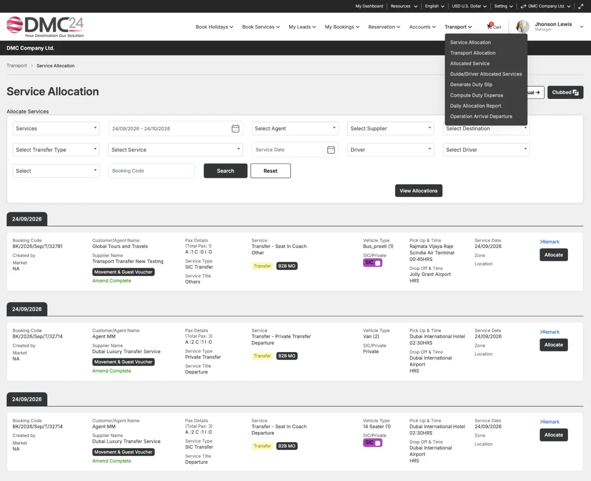

OPS
Daily Operations
Bring confirmed services into daily movement charts and operational worklists.
Coordinate vouchers, vehicles, drivers, representatives, guides, guest movements, transport and daily operational fulfilment from one connected workspace.

Use confirmed booking details to plan guest movements, assign vehicles and guides, issue duty slips and record operational expenses.
Bring confirmed services into daily movement charts and operational worklists.
Allocate vehicles, coaches and supplier fleets according to service requirements.
Assign operating teams and communicate the information required for delivery.
Coordinate arrivals, departures, intercity transfers, day tours and transport logistics.
Manage operating advances and driver or guide imprest requirements.
Review vehicle and driver utilisation, service completion, expenses and basic maintenance information.
Use booking data without re-entry.
Review dates, guests, services and locations.
Assign suppliers, vehicles and operating teams.
Complete services and return operational information.
Tell us how your DMC works today. We’ll show you how DMC24 can support tomorrow.